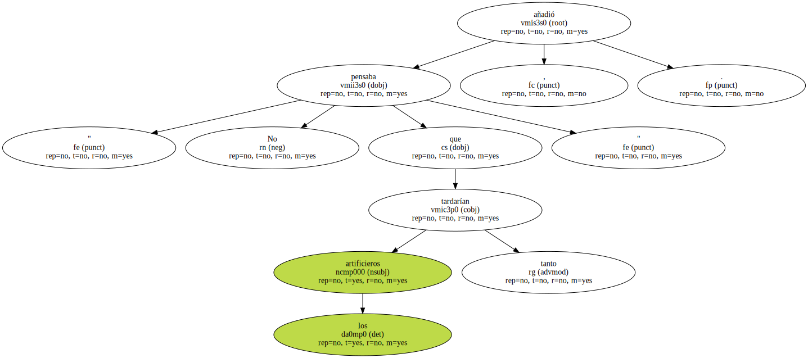
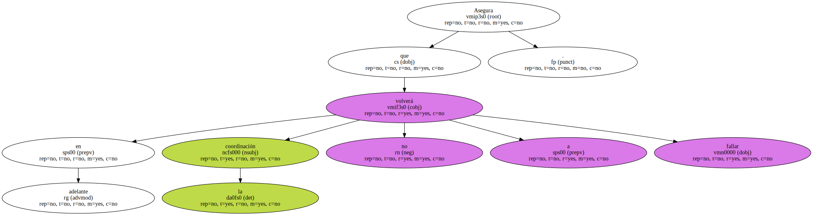
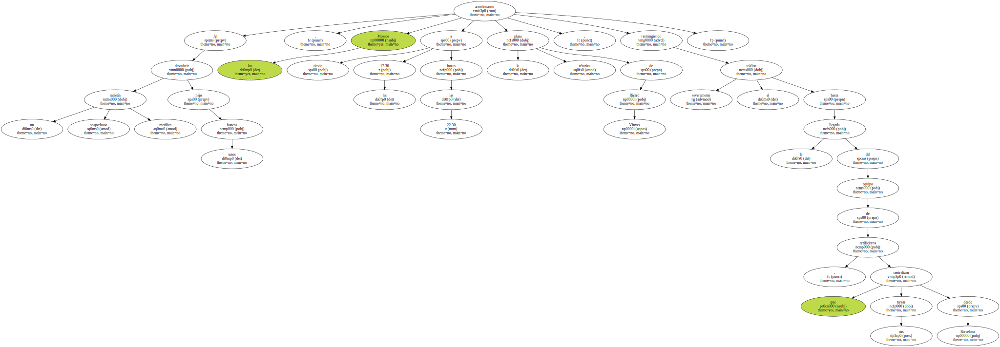
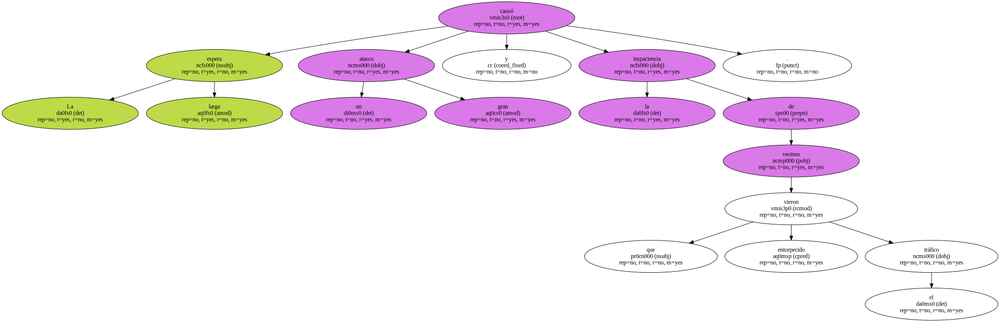
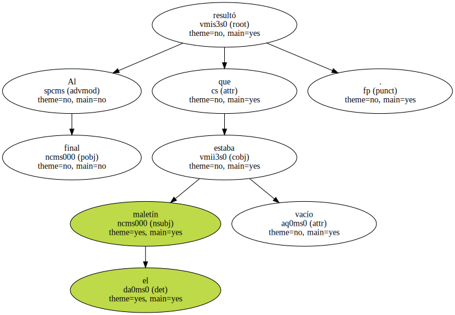
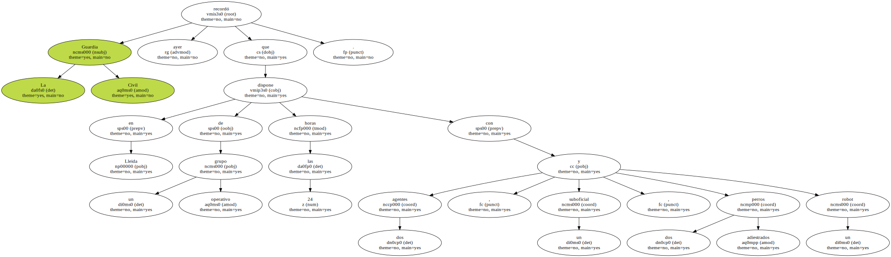
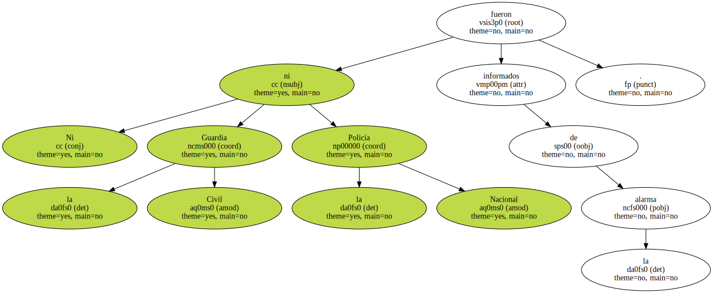

El responsable policial de los Mossos d'Esquadra en Ponent , Joan Martínez Roma , admitió ayer que " fue un error no avisar a la Guardia Civil " cuando el Jueves por la noche tuvieron cortado el centro de Lleida durante cinco horas en espera de que llegaran sus artificieros para comprobar un maletín sospechoso.

" No pensaba que los artificieros tardarían tanto " , añadió.
Asegura que en adelante la coordinación no volverá a fallar.
Al descubrir un sospechoso maletín metálico bajo unos bancos , los Mossos acordonaron desde las 17.30 a las 22.30 horas la céntrica plaza de Ricard Vinyes , restringiendo severamente el tráfico hasta la llegada del equipo de artificieros , que centralizan sus tareas desde Barcelona.
La larga espera causó un gran atasco y la impaciencia de vecinos que vieron entorpecido el tráfico.
Al final resultó que el maletín estaba vacío.
La Guardia Civil recordó ayer que dispone en Lleida de un grupo operativo las 24 horas con dos agentes , un suboficial , dos perros adiestrados y un robot.
Ni la Guardia Civil ni la Policía Nacional fueron informados de la alarma.
